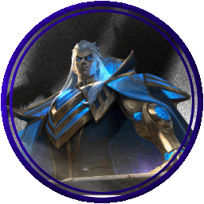
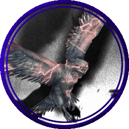
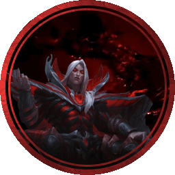

Human Kingdoms
The Human Kingdoms, sometimes also refered to as the Mortal Kingdoms, is the colllection of the remaining humanoids after the Civil War. Brought together by Issac they now prosper greatly within
their main captiol of Falconreach. While there are still many outposts and smaller villages and towns in the surrounding area, many decided to move back to the capital after the arrival of the Giants and Dragons.
A marvel of Artifice and magic the main city is a steampunk paradise where its people prosper and survive even with the troubling state of the continent.
Known Important Members
Issac

Issac Fordring is the current king and ruler of the Human Kingdoms. A hero of the civil war Issac rise to power was swift and unexpected. Many had assumed he would of retired as he had
lost both his son and wife in the war. Instead with his trust Hawk Betty at his side he reunited the scattered people and built the capitol with the survivors. Under his rule his people strive and see
him as a divine being due to the miracles he worked in bringing them together and keeping them safe.
Betty

Not much is know about Betty aside from her attachment to Issac. She is seemingly a regular Hawk, however Betty is able to cast advance magic and has its own flock of familars that it
uses to keep an eye on the captial and any people of intrest inculding the party. She is Issac's eyes and most trusted companion.
S
Crimson

Crimson is a strange human. Despite often being confused as a vampire due to his long life and blood based magic he is indeed a regular human. He himself is also a mystery as he comes and
goes as he pleases and treats Issac as simply a child who he once taught. Despite this Issac still respects him and often seeks him out for counsel.